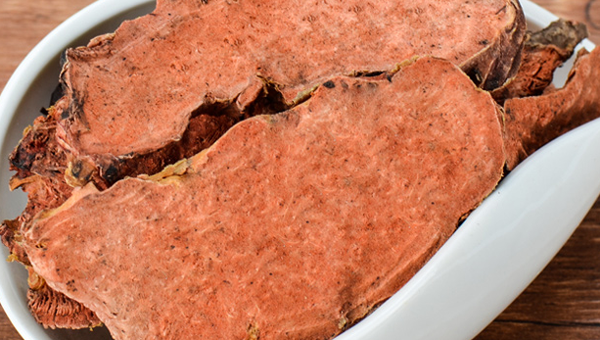
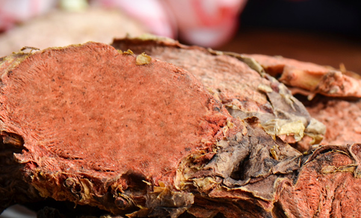
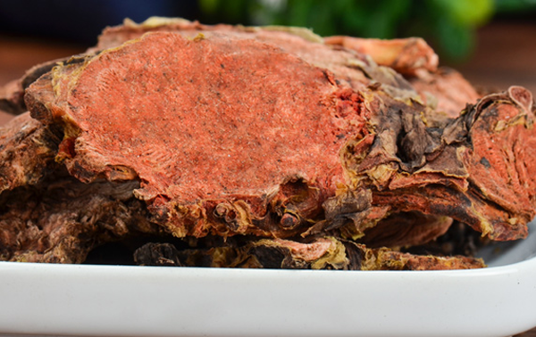

在两千多年前，西藏人民就将红景天入药，被称为“吉祥三宝”。在西藏这种高海拔地区，由于氧含量不足，所以人容易出现缺氧的症状，主要表现为身体疲倦、呼吸困难、头晕头痛。问题严重还有可能出现昏迷甚至死亡。红景天能很好的帮助身体适应这种缺氧的情况，能够增强体内细胞的氧气扩散，令身体中的氧气更加的充足。并且在进入身体之后还能够有效的提高身体对于一些抵抗力，提高身体的适应力。红景天有很多的服用方法，今天给大家简单介绍一下红景天泡水喝的功效。
1、营养物质丰富

红景天中有35种微量元素，而氨基酸则有18种，更有多重维生素以及氧化物。值得一提的是，红景天中所含有的营养成分非常的合理，这是目前所发现植物中很罕见的存在。
2、提高耐力
在相关实验中，小白鼠服用红景天提取物之后，能够很好的延长游泳的时间，对于呼吸还有运动都有不错的促进作用。所以，目前红景天制剂或者是红景天泡水喝这些方法，对于特种工作者的健康有着很好的防护效果。
3、抗疲劳

红景天有很好的强心作用，能够增加大脑还有肌肉的正常活动时间，同时提高肌肉的负荷能力。人体在出现疲惫的时候，可以将红景天泡水喝，能有效的提高精神。日常生活中，一些身体过于疲倦、智力不行、注意力不集中、产后虚弱以及各类型神经衰弱、肌无力的患者，都可以适量的服用红景天产品，或者是直接将红景天泡水喝，能使身体保持精力。红景天能够很好的提高注意力、记忆力，具有提神醒脑的效果，有效的提高工作效力，并且减少患有老年痴呆症的可能。
4、抗肿瘤抗辐射
红景天中所含有的红景天苷能够有效的提高体内淋巴细胞的转化率，同时提高吞噬细胞的活力，极大的提高身体免疫力，对肿瘤的生长有着不错的抑制能力，并且对于微波辐射也有很好的抵抗效果。癌症患者在进行完化疗手术之后，身体受到大量辐射并且虚弱，这个时候就可以服用红景天来辅助身体康复。
5、抗氧化抗衰老

红景天进入身体之后能有效的降低肌肉的耗氧量，提高大脑对于缺氧情况的忍耐力，同时提高血液承载氧气的能力。不仅仅能够提高身体的抗病能力，同时还可以提高抗氧能力这也是它能有效延缓细胞衰老的秘诀。提高细胞的活力，增强细胞的代谢能力以及合成能力，具有养颜美容的作用，现在很多的化妆品中就有红景天的成分。
6、调节作用
红景天进入身体之后能够有效的消除紧张的心情，同时调节中枢神经，对于睡眠质量还有亢奋心情、抑郁心情等都有很好的调节作用。它能很好的调动机体内部的一些积极因素，对于身体缺失或者多余的部分它都能有一个双向调节作用。其中含有的物质能够通过调节体内的神经系统、内分泌系统以及代谢系统等等，对于心脑血管功能、血脂功能还有血压功能的恢复有着非常好的效果。
结语：红景天除了单独泡水之外，也可以根据患者不同的体质来和其他的中药材一起制作成为药膳服用，适合患有呼吸系统疾病还有心血管疾病的患者服用。一般情况下，如果体质还有免疫力比较差的患者，可以将红景天和红枣以及黄芪一起服用;如果是患有心血管方面疾病的患者，可以红景天与三七搭配;红景天、山楂和决明子一起则适合高血脂、脂肪肝的患者，效果非常的不错。而且红景天目前暂时还没有相关的配伍禁忌。